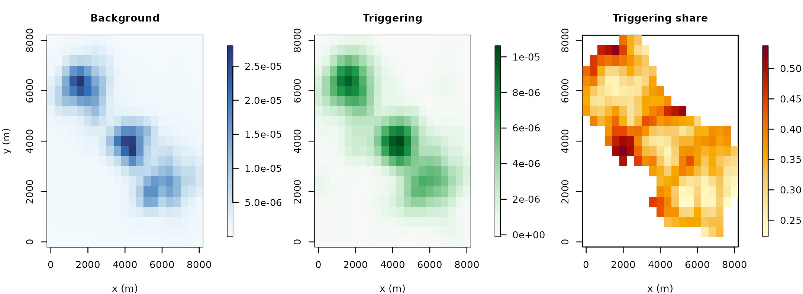

Separating background risk from contagion
Source:vignettes/background-and-triggering.Rmd
background-and-triggering.RmdWhy bother separating them: a crime based illustration
Two neighbourhoods record the same number of homicides over a year. In one, the events are spread through the year with no particular relationship to each other: the place is simply dangerous, for reasons that were true before any of those events and remain true after, e.g. land use, guardianship, who passes through. In the other, one shooting was followed by a retaliation, which was followed by another, all within weeks and within close proximity.
The count is identical. The right response is not. The first calls for sustained structural work; the second calls for rapid, targeted disruption of a chain that is currently running. A model that reports only intensity cannot tell them apart. That is the whole reason for fitting a self-exciting process rather than an inhomogeneous Poisson one.
This article shows how to get that separation out of a fitted model.
The two components
The fitted conditional intensity has exactly two terms:
Accumulating each over a time window gives two surfaces that add up to the total risk over that period:
is the geography of persistent risk — where events are expected regardless of what has just happened. is the part attributable to the events that actually occurred.
Fitting
We use the bundled simulated data (?sim_events), which
was generated with a known branching ratio of A = 0.35. The
fit limits the triggering kernel to 1 km from each event
(trigger_window_dist and the kernel grid’s
x_range), a few times the distance at which the simulation
placed offspring. A much wider reach lets the kernel’s tail absorb
clustering in the background and inflates A.
fit <- fit_semihawkes(
points = sim_events,
region = sim_region,
date_col = "date",
cell_size = 400,
cache_dir = tempfile("spHawkes_marks_"),
bandwidth_args = list(k = 5, min_dist = 150, min_bandwidth = 300),
trigger_window_dist = 1000,
trigger_spatial_args = list(x_range = 1000),
n_iter = 12,
verbose = FALSE
)
summary(fit)
#> Semi-parametric spatio-temporal Hawkes fit
#> ------------------------------------------------------------
#> Events : 375
#> Study window : 2021-01-03 to 2024-01-01 (1093 days)
#> CRS : EPSG:32717
#>
#> Parameters
#> mu (baseline rate) : 3.60987e-09 per unit area per day
#> A (branching ratio) : 0.3770 expected offspring per event
#> log-likelihood : -7150.43
#>
#> Branching structure (from fitted background probabilities)
#> background : 252.1 events ( 67.2%)
#> triggered : 122.9 events ( 32.8%)
#>
#> Fitted components (range over their support)
#> trend [ 0.5287, 1.377]
#> weekly [ 0.7436, 1.322]
#> monthly [ 0.9028, 1.166]
#> spatial background [ 0.05576, 7.047]
#> trigger (temporal) [ 0.0004071, 0.07703]
#> trigger (spatial) [ 0, 7.726e-07]
#>
#> Convergence
#> 12 EM iterations, reached n_iter without converging
#> final change in log-likelihood: 0.147195The summary already gives the split overall — what share of events the model attributes to each mechanism. What it does not give is where.
Computing the two surfaces
Everything needed is on the fitted object. The background is a product of the temporal multipliers and the spatial surface; the triggering term is a sum over observed events of the two kernels.
grid_x <- fit$background$x
grid_y <- fit$background$y
ev <- fit$events$events
days <- seq(0, floor(fit$events$TT)) # daily bins over the study period
# Background: separable, so the time factors collapse to a single scalar.
time_factor <- sum(fit$trend$fun(days) *
fit$weekly$fun(days) *
fit$monthly$fun(days))
Lambda_bg <- fit$mu * time_factor * fit$background$basevalue
# Triggering: accumulate each event's kernel over the grid.
GX <- grid_x %o% rep(1, length(grid_y))
GY <- rep(1, length(grid_x)) %o% grid_y
Lambda_tr <- matrix(0, nrow = length(grid_x), ncol = length(grid_y))
for (i in seq_len(nrow(ev))) {
g_sum <- sum(fit$temporal_trigger$fun(days - ev$days[i]))
if (g_sum <= 0) next
Lambda_tr <- Lambda_tr +
g_sum * fit$spatial_trigger$fun(GX - ev$coorx[i], GY - ev$coory[i])
}
Lambda_tr <- fit$A * Lambda_trMask to the study region, and check the split against what
summary() reported:
in_region <- fit$background$marks > 0
Lambda_bg[!in_region] <- NA
Lambda_tr[!in_region] <- NA
share_triggering <- sum(Lambda_tr, na.rm = TRUE) /
sum(Lambda_bg + Lambda_tr, na.rm = TRUE)
round(share_triggering, 3)
#> [1] 0.32This lands close to the summary() figure above, which is
a reassuring cross-check — but note that the two are related, not
identical, quantities. summary() averages the fitted
probability that each observed event was triggered; the
number here is the share of accumulated intensity over
the whole region attributable to the triggering term. They answer
slightly different questions and need not agree exactly. Landing within
a percentage point of each other is evidence that neither computation
has gone wrong; it is not an algebraic identity.
The absolute totals are less exact. Added up, the two surfaces imply about 409 events against the 375 observed, because this is a coarse Riemann sum over grid cells and whole days whereas the package integrates on a finer temporal mesh internally. Read the proportions rather than the totals.
Where each mechanism dominates

The first two panels look similar, and they should: triggered events happen near where events happen, so both components peak in the same three places.
The third panel is the one that carries information the first two do not. It is the proportion of accumulated risk attributable to triggering, shown only where there is enough risk for the ratio to mean something. Low values mark places whose risk is structural — they would be dangerous regardless. High values mark places whose risk is disproportionately a consequence of recent events, and where interrupting the chain is therefore the intervention with something to bite on.
In the paper’s vocabulary, the low-share cores are established hotspots and the high-share margins are emerging ones.
Reading it with care
Three caveats worth carrying.
The share is a ratio, and ratios mislead where the denominator is small. Hence the masking above. Without it, the highest triggering shares appear in the emptiest parts of the map, which is an artefact rather than a finding.
This is a fixed window. Both surfaces were
accumulated over the whole study period. Computing them year by year is
what turns this into the paper’s account of hotspots that shift and
reorganise, and is a matter of restricting days and the
event set to each window in turn.
Attribution is model-based, not observed. The branching structure is latent. “This cell is 40% triggered” means the fitted model assigns 40% of the accumulated intensity there to the self-exciting term — under this specification of the background. A background specified differently would move that number, which is exactly why the background’s form is a substantive modelling decision rather than a default.
A note on where this is going
The loop above is deliberately written out rather than hidden,
because it is short and because seeing it makes clear what the
decomposition actually is. It is, however, the obvious candidate for a
predict() method — one that takes a fit, a period and a
component and returns the surface directly. Doing it here first fixes
the output and the interface in a form that can be critiqued before any
of it is committed to the package’s API.